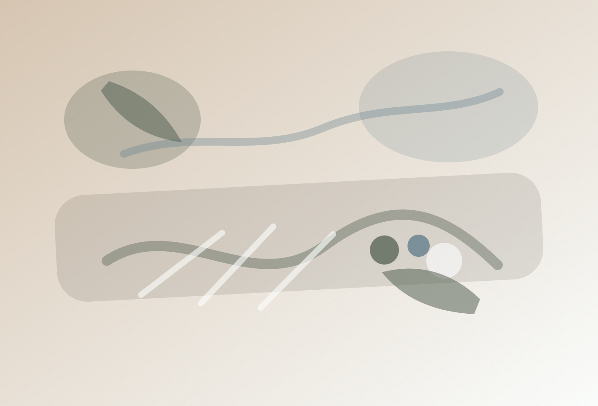
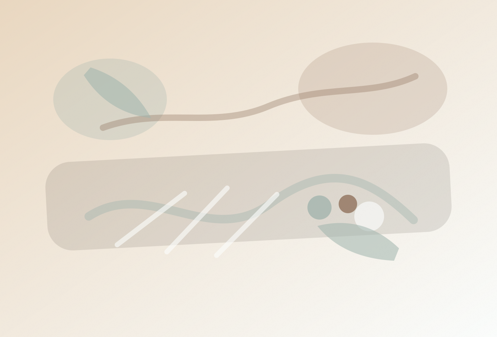
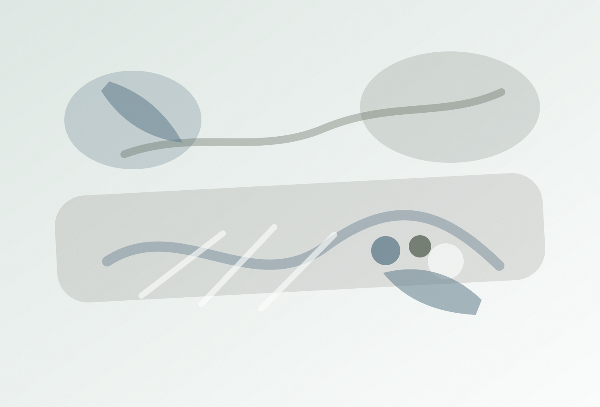
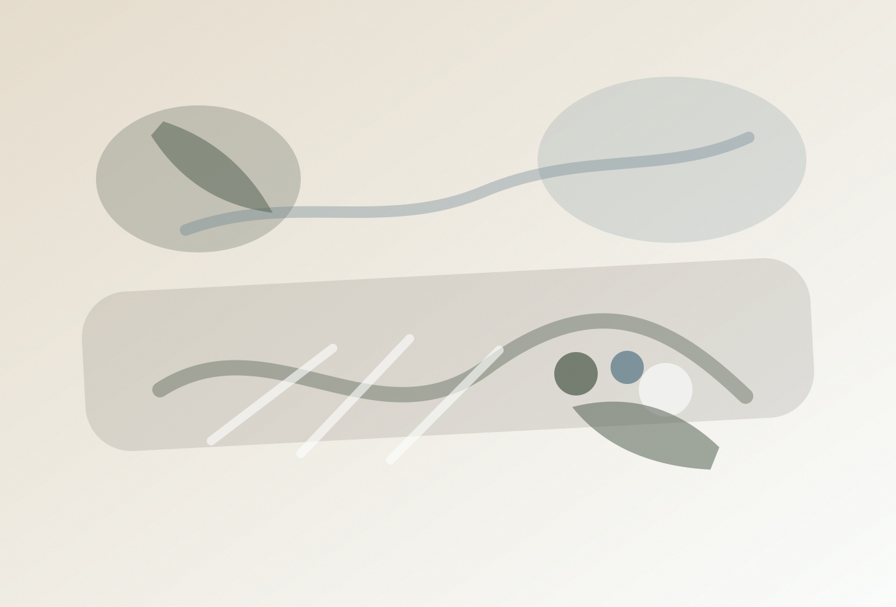
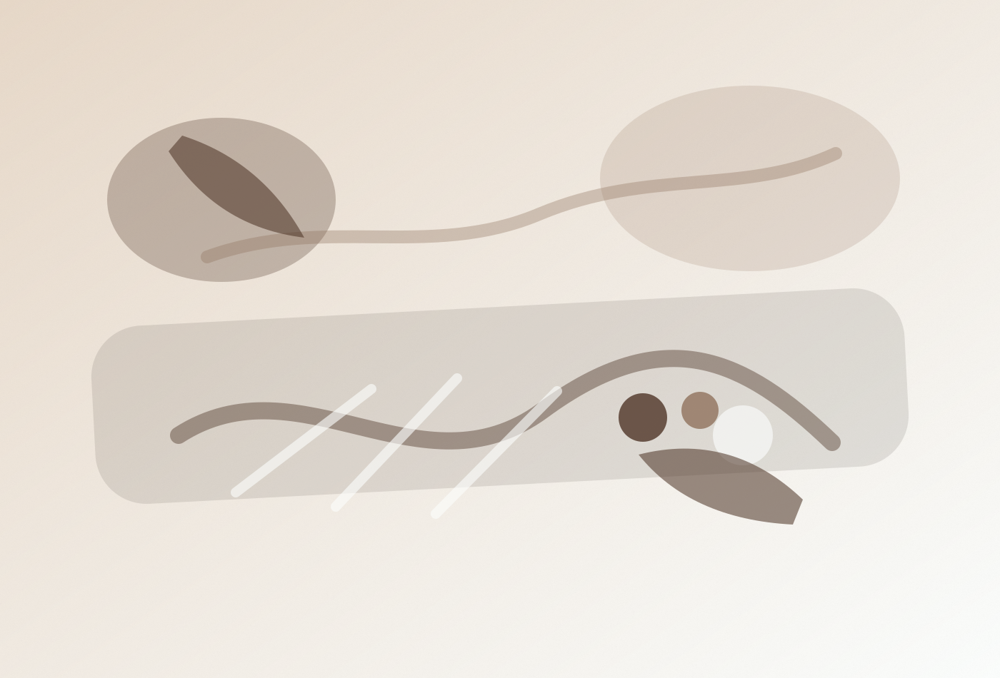
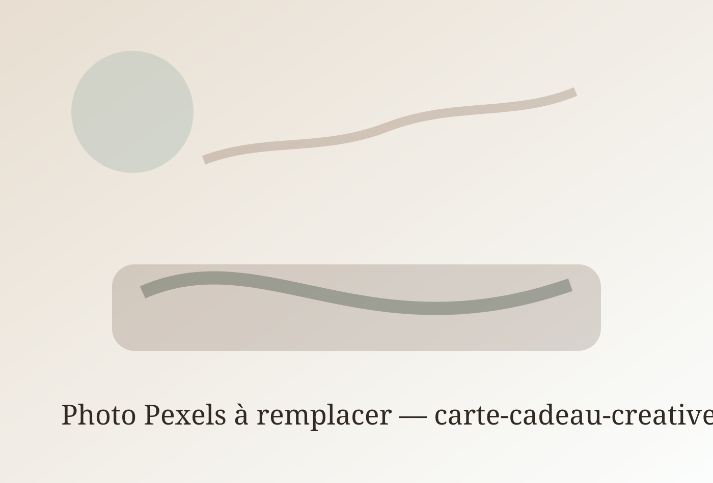
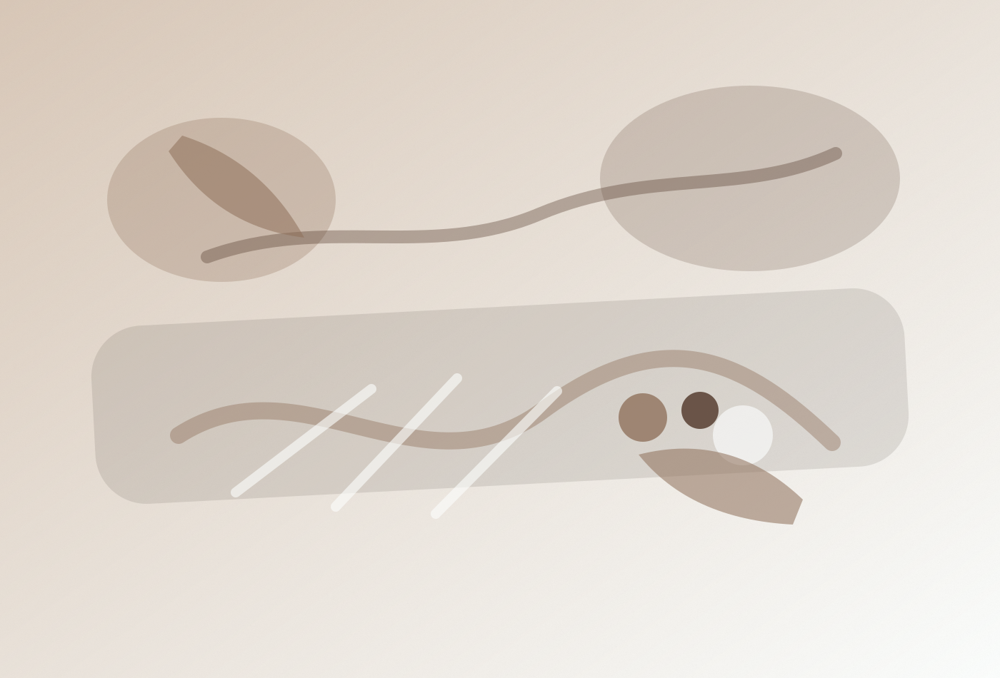

Atelier · À la une
65 €
Aquarelle botanique
Un atelier doux pour découvrir l’aquarelle, apprendre les bases et repartir avec l’envie de continuer à la maison.
Réserver ma placePiste 3 · L’Agenda créatif
Ateliers, démonstrations, rencontres locales et moments créatifs à venir à Remouchamps.
Une page pensée comme un tableau de bord vivant : on voit ce qui arrive, ce qui reste disponible et ce qui donne envie de revenir.
Un atelier doux pour découvrir l’aquarelle, apprendre les bases et repartir avec l’envie de continuer à la maison.
Réserver ma placeProgrammation
Un aperçu clair des ateliers, rencontres et moments à venir chez Linia.
2h30 · Débutant · 4 places restantes
2h · Accessible à tous · 6 places
1h30 · Dès 6 ans · 3 places restantes
Découverte · Entrée libre
Papier, pinceaux, couleurs
Accès rapides
Linia vous aide à trouver le bon moment selon votre niveau, votre âge ou votre envie créative.

Ateliers accessibles, matériel simple, accompagnement bienveillant.
Voir les ateliers débutants
Moments parent-enfant, ateliers enfants, créations à emporter.
Voir les ateliers famille
Aquarelle, dessin, linogravure, pastel, Posca, techniques mixtes.
Explorer les techniques
Café, rencontre, démonstration, soirée créative ou brunch créatif.
Voir les événements
Expériences à offrir
Pour un anniversaire, une fête, une attention ou une envie de faire découvrir Linia, les cartes cadeaux permettent d’offrir une expérience créative.

Pour offrir une place à un atelier créatif.
À partir de 40 €Offrir un atelier
Pour laisser le choix entre boutique, atelier et moment créatif.
Montant libreOffrir une carteUn atelier, une pause café et une petite surprise.
À partir de 65 €DécouvrirLocal & transmission
Linia met en lumière des artistes et artisans locaux à travers des créations, des rencontres, des collaborations et des ateliers invités.

Une sélection d’objets, d’illustrations ou de pièces artisanales à découvrir en boutique.
DécouvrirObjets et illustrations en dépôt-vente.
Transmission par un artisan de la région.
À annoncer
Une section pensée pour annoncer les futurs ateliers, collaborations, nouveautés boutique et événements.
SEO local
Linia accueille les curieux, familles, artistes et passionnés de Remouchamps, Aywaille, Sprimont, Theux, Spa, Liège et de la Vallée de l’Amblève.
Décision design
Cette piste rend Linia très vivante. Elle donne envie de revenir régulièrement pour consulter les prochains ateliers, rencontres et nouveautés.
Elle demande une mise à jour régulière de l’agenda pour rester crédible.
Si Linia veut être perçue comme une adresse créative active, avec une programmation claire et des rendez-vous à ne pas manquer.